Todas están dibujadas con código propio (tools/vram.py, tools/pantallas.py, tools/sprites.py y tools/animaciones.py) siguiendo los pasos de la rutina que las pinta, citada en cada una. Ninguna es una captura. Cada una se ha comparado con la VRAM de openMSX volcada con el juego en marcha (tools/omsx_vram.tcl, tools/coteja_vram.py); debajo de cada una está cuánto coincide.
El juego va en SCREEN 5 del V9938 (256 × 212 puntos, 16 colores). Casi todo se pinta en dos pasos: primero se montan los gráficos en la página 1 de la VRAM (la «hoja», de 32 caracteres por fila) y luego se copian a la página que se ve con las órdenes del VDP.
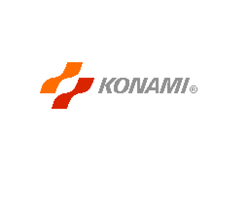
p03:B670 monta el logo en la página 1 (p00:57C6: tres tiras de caracteres de un bit y la lista de p09:BCA5, con la paleta de p09:BE86) y p14:872E lo destapa: cada dos cuadros copia una fila más, hasta 48, a la página 0. Cotejado: 0 bytes distintos en dos volcados.
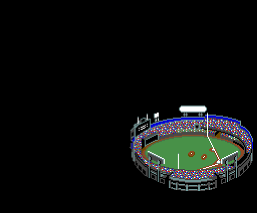
p15:BB97, cuadro a cuadro. Primero el estadio solo, 32 cuadros. Luego una pelota sale de él y se acerca (p15:BD99: posición y velocidad; cada cuadro frena, y cada 8 cambia a una forma más grande, de 1 a 4 piezas de dos sprites, p15:BD13 y p15:BD31). Después, con otros dibujos de sprite (p00:5421), una pelota de 64 × 64 que gira (dos formas que se turnan cada 8 cuadros) cruza la pantalla a 4 puntos por cuadro, y detrás de ella se copia el rótulo de la página 1, columna a columna (p15:BC39). Cotejado con el volcado del cruce: la página 0 igual y los 32 atributos de sprite iguales (los 8 últimos, un cuadro por detrás: el juego los copia a la VRAM en dos tandas, p00:42A1).
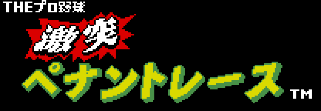
El rótulo «THEプロ野球 激突ペナントレース» (p00:52E7): los dibujos de p09:B07A y la lista de caracteres de p09:B6B9, montados en la página 1. Cotejado: 0 bytes distintos.
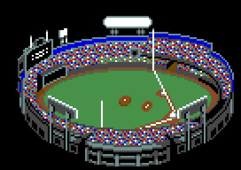
El estadio (p00:5427): los dibujos de p09:A619 y 16 × 11 caracteres en rachas de p09:AFC4, con la paleta de p07:6000. Cotejado: 0 bytes distintos.
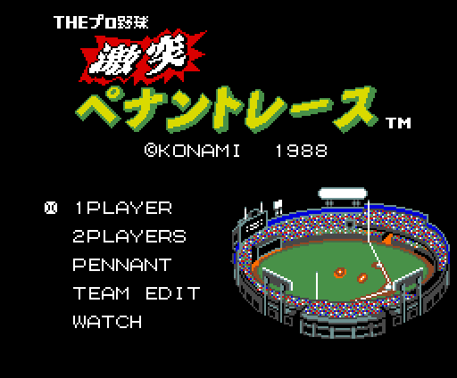
p01:651C: la presentación terminada, el rótulo copiado de la página 1 a (0x1C, 0x08), los cinco textos seguidos de p13:7D8F y el marcador, el carácter 0x9A, en la fila del modo elegido (p01:65AF). Con disco y Game Master 2 sale un sexto, MEDIA SELECT. Cotejado: 0 bytes distintos.
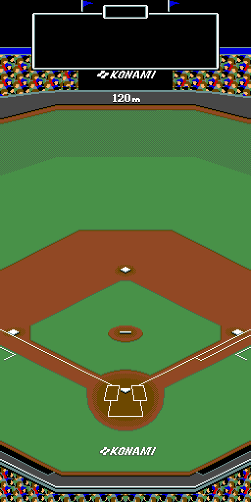
El campo tiene tres zonas: el centro y los dos lados. Cada una mide 256 × 512 puntos y es un mapa de 16 × 8 mosaicos de 4 × 4 caracteres (p08:9432); los mosaicos salen de p08:95B8 (y de p08:9A58 en las dos últimas tiras de la lista). La pantalla enseña cada vez una parte de la zona. Cotejado: zona del centro, las 256 líneas que había en la VRAM, iguales en dos volcados; en otros tres difieren de 8 a 22 líneas, que son los letreros y las tiras que el juego estaba pintando en ese momento.
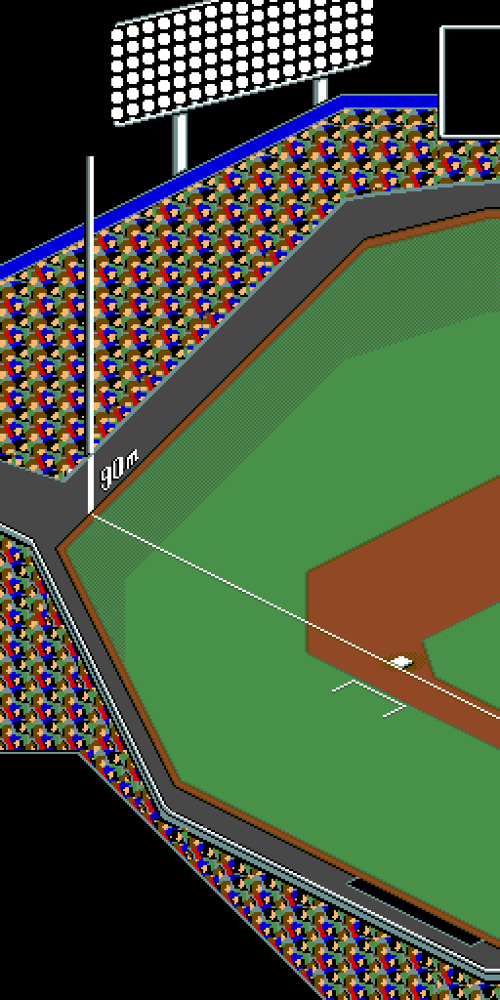
La zona del jardín izquierdo (mosaicos de p08:9B28).
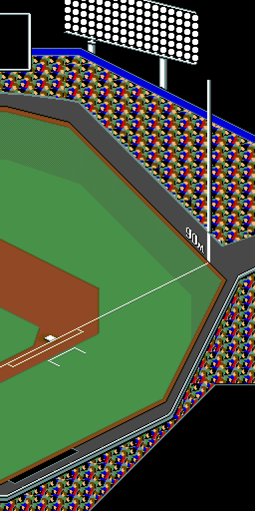
La zona del jardín derecho (mosaicos de p09:A088). Estas dos están dibujadas con el mismo código que la central, pero no están cotejadas: la demostración no sale de la zona del centro.
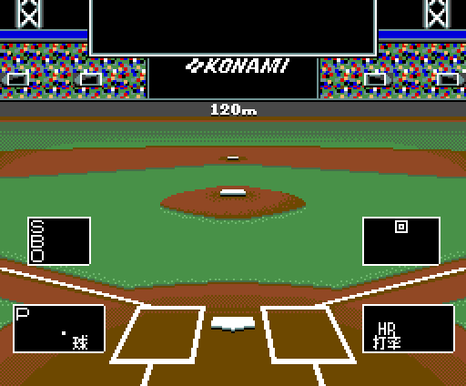
La pantalla del lanzamiento, vista desde detrás de la casa (p01:6352): el fondo en rachas de p08:9220, dos marcos y el texto de p13:7E1E (S B O, el 回 de la entrada, HR y 打率). Sin partido, las casillas y las cifras quedan vacías. Cotejado: 728 de 864 bloques iguales; lo demás es la ventanita de las bases y las cifras del partido que se estaba jugando.
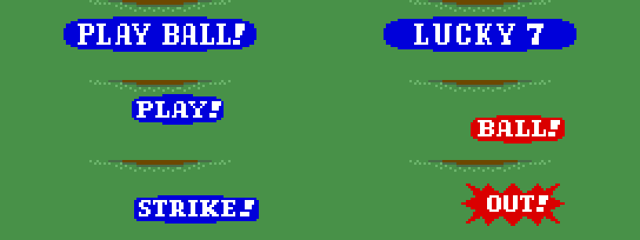
Los letreros se pintan sobre ella como listas de dibujos, en azul o en rojo (las paletas de p00:51B2), cada uno con su pareja para el bateador del otro lado: PLAY BALL! al empezar la media entrada (p13:7925), LUCKY 7 en la séptima (p11:96EE), PLAY! (p13:BA9B), BALL! (p11:9401), STRIKE! (p11:94BB) y OUT! (p11:95A8). Cotejados: STRIKE! y PLAY! (por los dos lados) iguales byte a byte en siete volcados; los otros cuatro no salen en ninguno.
Los jugadores son sprites del modo 2 del V9938: 16 × 16 puntos, un color por línea, y dos sprites en el mismo sitio, el segundo con el bit CC, mezclan sus colores. El juego lleva los atributos en la RAM (0xE100); su cuarto byte no es un color sino un índice: p00:5B1F descomprime la racha de p09:BC05 que le toca en los 16 colores de línea del sprite. Cada jugador es un sprite de contorno (índice 7) y otro de camiseta: 0x18 el local y 0x1B el visitante, los colores 8 y 11 de la paleta, que salen del equipo (p00:5517, la tabla de p09:BFDE: FLYERS azul, RIDERS naranja, KOBE LINES verde, BRENDS celeste, PROGRAMS blanco, DARKS gris). Aquí, los de la demostración: RIDERS contra KOBE LINES. Cotejado: los colores de los 463 sprites que se ven en los volcados salen iguales de p09:BC05.
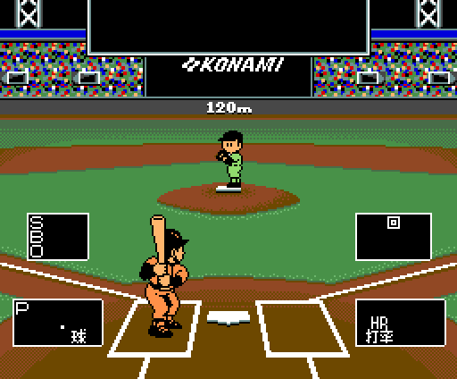
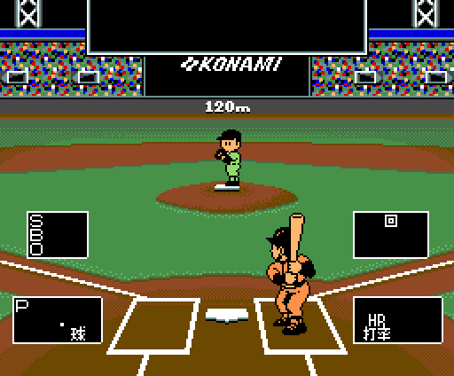
El bateador son 18 o 20 sprites. Al empezar cada bola (p02:8860), p00:5677 descomprime su almacén de dibujos en una zona de la página 0 que no se ve (0x6C00: p10:604D y p10:7C4B, o p10:6808 y p10:7ECB si batea por la izquierda). Cada formación (0-6) copia de allí medias líneas de 64 bytes a la tabla de dibujos de sprite, según la ficha de 11 bytes de p10:6000 (p00:5761), y pone sus atributos (p11:9911, o p11:991F por la izquierda; p00:5877). El swing (p02:8663): en reposo la formación 4; con el botón, cada 2 cuadros la 3, la 2, la 1 y la 0; al soltar, cada 3 cuadros vuelve. En la fase 2, la formación es la 5 con el mando arriba y la 6 abajo (p00:584F).
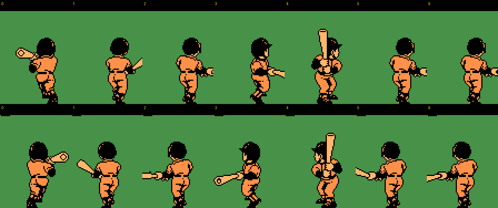
Las siete formaciones por los dos lados. Cotejado: los dibujos y los atributos de las formaciones 0 y 4 por los dos lados, iguales byte a byte en los volcados.
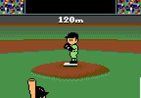
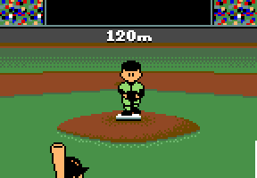
El lanzador son 4 sprites. p00:56C4 copia las 7 posturas de su estilo (p10:6FBE, 4 estilos; los zurdos, en espejo) a las líneas 0xF9-0xFF de la página 0, y cada vez que cambia el paso del movimiento (0xE1D3) p00:56B1 copia la línea de esa postura a los dibujos de sprite 0xB0-0xBF. El paso empieza en 5 (p03:AA11) y baja con las esperas de p03:A83F (16, 16, 20 y 24 cuadros); en el 1 sale la pelota. Los atributos de cada paso, de p11:9DB2.
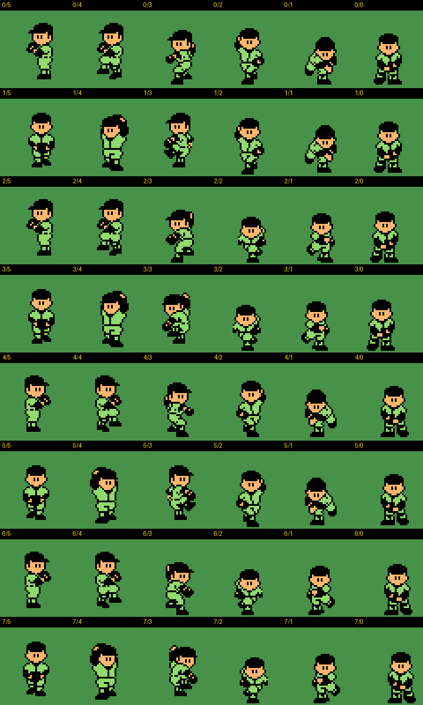
Los 4 estilos y sus espejos, pasos 5 a 0. Cotejado: la postura y los 4 atributos, iguales byte a byte en 18 volcados, con los pasos 0 a 5.
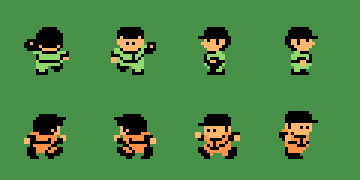
En el campo cada jugador son dos sprites: el dibujo d con el contorno y el d + 4 con la camiseta (p01:7594). Los defensores van por la dirección (p01:7280: arriba 0x00, abajo 0x10, izquierda 0x20, derecha 0x30) y los corredores igual desde 0x70 (p02:8FC8); el bit 3 del contador 0xED0E, que cambia cada 8 cuadros, alterna las piernas.
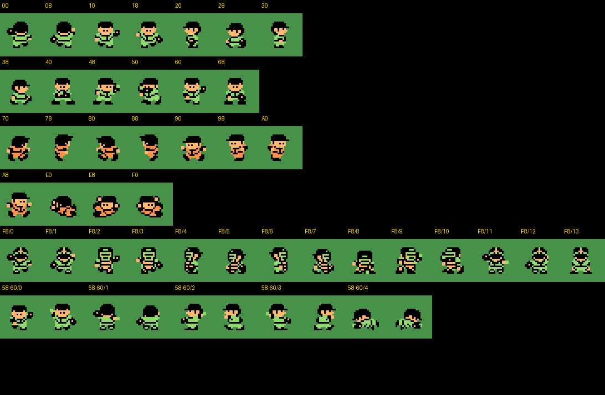
Todas las posturas: los defensores (y agachado, 0x40), los corredores y sus deslizamientos (0xE0 + 8 por base, p02:8C74), las 14 del receptor (p00:5716, p11:8759) y las 5 de quien lleva la pelota (p00:572E, p11:8499). Los dibujos son los del partido (p00:537C, p00:539D, p00:53CC), cotejados: iguales en los volcados del campo salvo los que el juego cambia sobre la marcha.
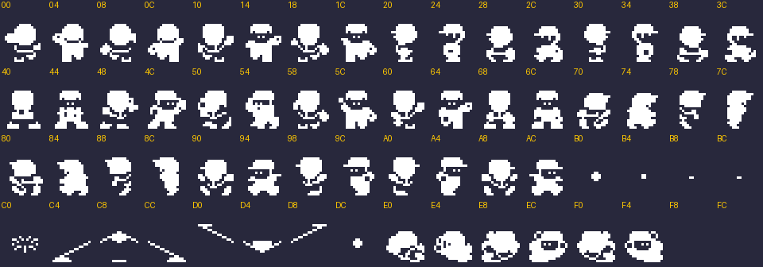
Los 64 dibujos de 16 × 16 del partido (VRAM 0xF800-0xFFFF), en un solo color. Sobre ellos, p00:572E pone en 0xFAC0 los de quien lleva la pelota y p00:5716 en 0xFFC0 los del receptor.
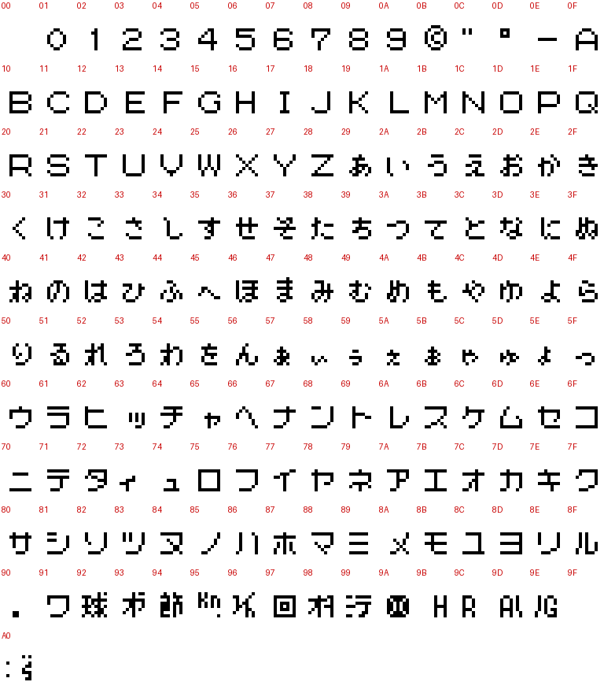
161 caracteres de un bit en p12:B6C3: cifras, letras, hiragana, katakana y signos. Se ponen dos veces en la hoja, la segunda en el color 4. Encima van dos juegos de kanji: 17 de p09:B942 para el partido (戦打数安本塁三振四死球盗失策防御率) y 11 de p09:B9DA para las pantallas de PENNANT (試合結果勝敗差順位表 y una comilla).